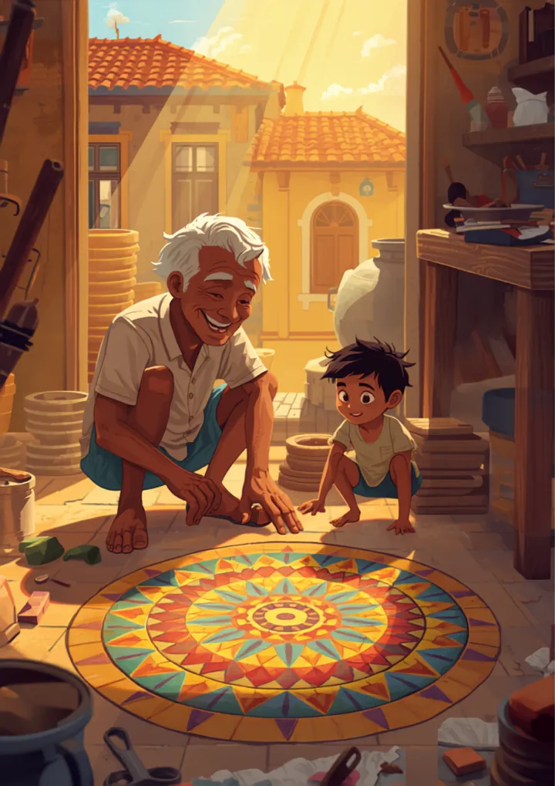

🎨 Os mosaicos de Seu Benedito
No centro histórico de São Luís, no Maranhão, o sol bate na fachada dos antigos casarões e reflete um festival de cores. Ali vive o Seu Benedito, um dos últimos mestres ladrilheiros da região. Ele aprendeu com seu pai a arte secular de fabricar e assentar ladrilhos hidráulicos, um patrimônio cultural vibrante e muito amado no Brasil.
Hoje é um dia especial: o pequeno Tiago, neto de Seu Benedito, está na oficina ajudando a desenformar as peças — feitas de cimento e pigmentos, prensadas em moldes de metal e curadas na água, por isso o nome "hidráulico". Ele fica fascinado com a forma como os triângulos coloridos se encaixam perfeitamente ao redor de cada ponto do piso, sem deixar nenhuma fresta ou espaço vazio.
"Vovô, como os triângulos sabem exatamente como se encaixar sem brigar?", pergunta Tiago, rindo. Seu Benedito coloca as mãos sujas de cimento nos ombros do neto e explica: "Cada triângulo, Tiago, carrega um segredo nas suas três pontas. Se você juntar as três pontas lado a lado, elas formam uma linha reta: meia volta. Em volta de cada ponto do piso cabe uma volta inteira — e cada canto de triângulo aparece ali duas vezes. Duas meias voltas fecham a volta completa, sem sobrar nem faltar."
Sobre esta história: Seu Benedito e Tiago são personagens fictícios. O Centro Histórico de São Luís (MA), Patrimônio Mundial da UNESCO desde 1997, é conhecido pelos casarões revestidos de azulejos portugueses; os ladrilhos hidráulicos, de cimento, são outra tradição de pisos decorados presente em muitas cidades brasileiras.

➕ A soma dos ângulos internos
Em qualquer triângulo — seja ele equilátero, escaleno, acutângulo ou obtusângulo — a soma das medidas dos três ângulos internos é sempre a mesma:
Isso significa que, se você já sabe dois dos três ângulos, consegue descobrir o terceiro sem medir nada — basta subtrair de 180°.
✂️ Experimento: rasgue as pontas
- Desenhe um triângulo qualquer numa folha e pinte cada canto de uma cor.
- Recorte o triângulo e rasgue (não corte!) os três cantos coloridos.
- Junte os três cantos com as pontas no mesmo ponto, lado a lado, sem sobrepor.
- Observe: as bordas externas formam uma linha reta — um ângulo raso, de 180°.
Cada colega pode fazer com um triângulo diferente e comparar. O experimento convence, mas não prova: medidas com papel têm imprecisões, e não dá para testar todos os triângulos do mundo. Para ter certeza, precisamos de um argumento que valha para qualquer triângulo.
📐 A demonstração (vale para todo triângulo)
- Pelo vértice A, trace a reta r paralela ao lado BC. (Pelo postulado das paralelas, essa reta existe e é única.)
- O lado AB é uma transversal às paralelas r e BC. Os ângulos laranja são alternos internos, portanto congruentes: o ângulo laranja em A mede o mesmo que B̂.
- Da mesma forma, com a transversal AC, o ângulo verde em A mede o mesmo que Ĉ.
- Em A, os três ângulos — laranja, roxo (o próprio Â) e verde — estão lado a lado sobre a reta r e formam um ângulo raso. Logo, B̂ + Â + Ĉ = 180°. ∎
Consequências: (1) um triângulo nunca tem dois ângulos retos ou obtusos; (2) cada ângulo de um triângulo equilátero mede 60°; (3) o ângulo externo em um vértice é igual à soma dos dois ângulos internos não adjacentes a ele.
✏️ Vamos treinar
🖐️ Arraste e confirme os 180°
Arraste os vértices do triângulo abaixo. Não importa o formato: a soma dos três ângulos nunca sai de 180°. Ative a reta paralela para ver a demonstração acontecendo em movimento.
Soma: –
Missão — Complete o terceiro ângulo
Digite dois ângulos de um triângulo. Vamos calcular o terceiro.
🎨 Ângulos que se encaixam na sua cultura
Ladrilhos hidráulicos e mosaicos cobrem o chão sem sobras nem buracos porque os ângulos que se encontram em cada ponto somam uma volta completa (360°). Já a Arte Kusiwa — sistema gráfico do povo Wajãpi (Amapá), reconhecido pela UNESCO como Patrimônio Cultural Imaterial da Humanidade — combina triângulos, losangos e linhas em padrões que se repetem ao longo de faixas.
Encontre um padrão geométrico do seu contexto que se encaixa perfeitamente
Descreva o padrão e proponha uma explicação: como os ângulos das peças se somam para fechar perfeitamente ao redor de cada ponto de encontro? Dica: uma volta completa mede 360°. Quantos cantos de peça se encontram em cada ponto?
✅ Antes de seguir em frente
Marque com sinceridade. Isto não vale nota — é um mapa para você (e seu professor) saberem onde reforçar.
🎮 Complete o triângulo
Você sabe dois ângulos do triângulo. Descubra o terceiro antes de virar a rodada!
Qual é o ângulo que falta?